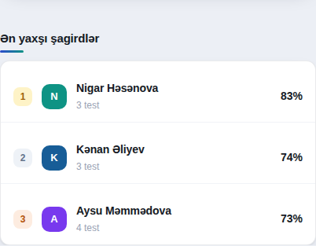
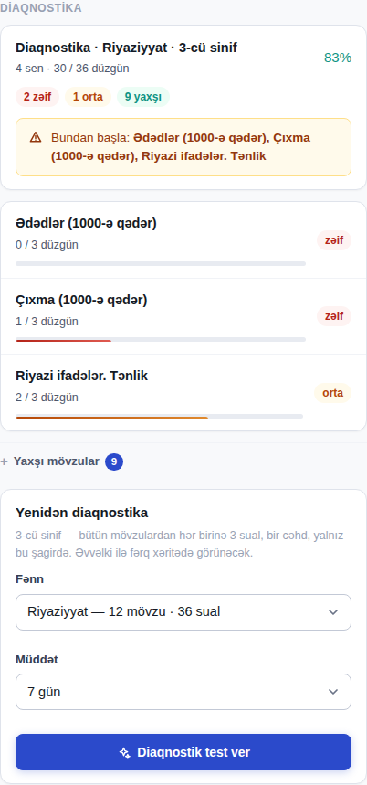
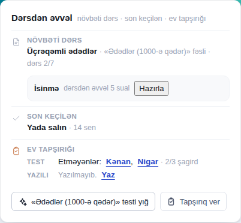
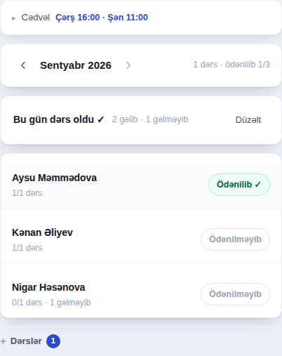
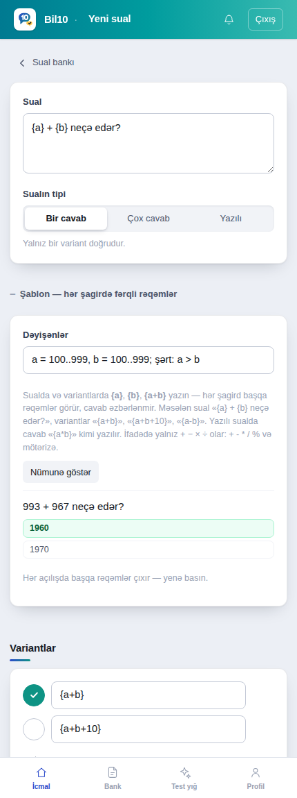
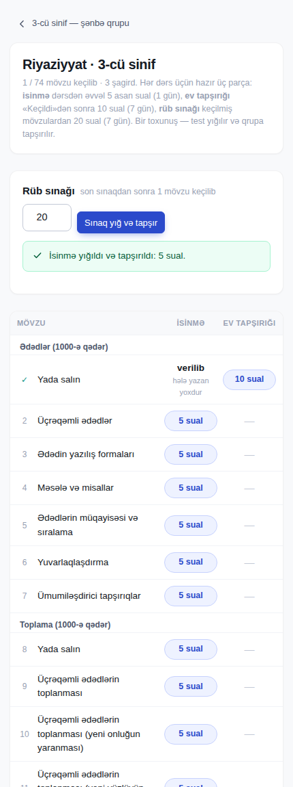
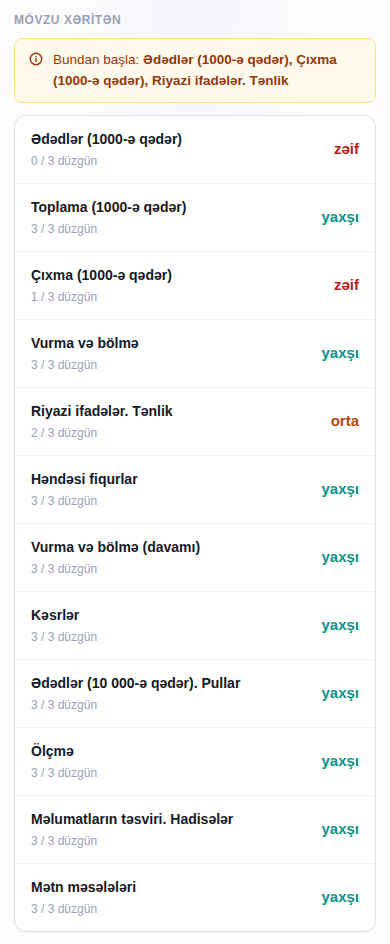
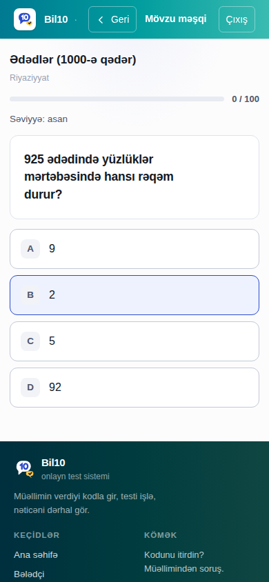

Necə işləyir
Beş dəqiqəlik bələdçi. Bir dəfə qurursunuz, sonra hər həftə eyni axınla gedir: müəllim tapşırıq verir → şagird kodla girib işləyir → nəticə özü yığılır.
Müəllim üçün
Telefon da kifayətdir. Şəkillər real tətbiqdəndir.
Qeydiyyat
Panelə keçin, «Qeydiyyat»ı seçin, ad, e-poçt və parol yazın. Sonra hesab növünü («Repetitor» və ya «Məktəb») və hesabın adını yazın — bu ad üst zolaqda görünəcək.
Hesab yaranan kimi ana səhifədə hədiyyə kartı çıxır: bir ay hər şey açıqdır — şagird sayında limit yoxdur, hazır suallar, avtomatik test, diaqnostika, dərs planı. Bitmə tarixi kartda yazılır; bitməyə bir həftə qalanda kart narıncı olur, oradakı düymə ilə bizə WhatsApp-la yaza bilərsiniz. Bitəndən sonra hesab bağlanmır — pulsuz həddə düşür: mövcud şagirdləriniz işləməyə davam edir, hazır suallar və diaqnostika bağlanır.

Qrup yaradın
İcmal ekranında qrupun adını yazın. Sinif məcburi deyil, amma seçsəniz iki şey açılır: diaqnostika və şagirdin sərbəst məşqi — hər ikisi qrupun sinfinə görə işləyir. Sinif seçilməsə, şagirdin hesabatında «Sinif seçilməyib — diaqnostika və şagirdin sərbəst məşqi bağlıdır» yazır; qalan hər şey işləyir.
- Bir hesabda istənilən sayda qrup ola bilər.
- Test yığmaq və dərs planı qrupun sinfindən asılı deyil — orada sinfi ayrıca seçirsiniz, hətta bir neçəsini birdən (məsələn 8 və 7-ni birlikdə).
- Qrupa aşağı sinfin testini də vermək olar (məsələn 8-ci sinfə 7-nin təkrarı), yuxarı sinfinkini yox.
- 1-4-ü bir yerdə hazırlayırsınızsa, hər sinif üçün ayrıca qrup açmaq daha rahatdır: şagird yalnız bir qrupda olur və sinfini oradan götürür. Dərs saatı eyni ola bilər — cədvəl eyni saatda bir neçə qrupu yan-yana göstərir.

Şagird əlavə edin — kod özü yaranır
Qrupu açıb ad-soyad yazın. Hər şagirdə daimi giriş kodu yaranır (8 simvol). Kodu «Göndər» ilə WhatsApp-a atın və ya kopyalayın — şagird bu kodla girir, parol yoxdur.
- Şagird parolu itirə bilməz; kod sızsa qələmdən «Giriş kodunu yenilə» — köhnəsi dərhal ölür.
- Qələm altında «Dayandır» — şagirdi silmədən girişini bağlayır, nəticələri qalır.
- Qələmin altında Valideyn girişi var: açanda «V» ilə başlayan ayrıca kod yaranır (bax Valideyn).

Tapşırıq verin
Qrup ekranında «Tapşırıqlar» → testi seçin, son tarix və cəhd sayı qoyun. Şagird formasında əvvəl ad, sonra soyad yazın — lövhədəki qısa ad ondan yaranır. Şagird girən kimi tapşırığı görür, son tarixə nə qaldığı da yazılır.
- Testlər səhifənin içində siyahı kimidir: sətrə toxunun — seçilir. Siyahı uzundursa üstdəki fənn düymələri ilə süzün, «Test axtar» xanasına adın bir hissəsini yazın. Hər sətrin altında sual sayı, sinif və «başqa qrupa da verilib» qeydi var.
- Tapşırığı tək bir şagirdə də vermək olar («yalnız ona» — şagird ekranında «sənə» nişanı).
- «Sərbəst məşq» açıqdırsa şagird hazır testləri özü də işləyə bilər; bağlasanız yalnız verdiyiniz tapşırıqları görər.
- Hansı test nə vaxt? Hazır test və öz testiniz — bu ekran. Ev tapşırığı — dərs planında «Keçildi». Diaqnostik test və səhvlərdən təkrar — şagirdin hesabatında.
- Vaxtı bitmiş tapşırıq «Bağlı» sekmesinə keçir — nəticələr itmir.
- Tapşırıq verilən kimi hazır WhatsApp mətni çıxır: «WhatsApp-a göndər» — qrupa bir toxunuşla xəbər gedir.

Öz testinizi yığın
«Test yığ» — fənn, sinif, mövzu və çətinliyi seçin, sistem hazır suallardan test yığır. «Sual bankı»nda öz suallarınızı da yaza bilərsiniz; onlar yalnız sizindir.
- Hazır sualların düz cavabı şagird tərəfinə heç vaxt getmir — bal serverdə hesablanır.
- Testi kağıza çap etmək üçün «Test vərəqi» var.
- Öz sualınız 10-dan çox cavablanıbsa redaktorda statistika sətri çıxır: neçə faiz düz, ayırdetmə (güclü şagirdlər fərqlənirmi), heç seçilməyən variant. Mənfi ayırdetmə — açarı yoxlayın.
- Dərs planı olan qruplar üçün üstdə «Tövsiyə olunan» çıxır: son keçilən fəsildən 10 sual — «Yığ» basırsınız, test yığılır və tapşırıq ekranına keçir.

Hesabata baxın
Qrup ekranında «Hesabat»: kim işlədi, kim işləmədi, orta bal, hansı mövzu axsayır. Şagirdin adına toxunsanız onun öz hesabatı açılır — səhv etdiyi suallar da orada.
- Qrup ekranı özü xəbər verir: geriləyən şagird, zəif mövzu, ulduz.
- Zəif mövzudan bir klikə «səhvlər üzərində iş» testi yığılır.
- Hesabatın üstündə «Nə etməli» sətri: ən çox şagirdin zəif olduğu mövzu, adbaad, «Bu mövzudan test yığ».
- Şagird hesabatında «Cavab tərzi»: tələsik səhv (5 saniyədən tez), bilmədən düz («Əmin deyiləm» deyib düz cavablayıb), əmin idi amma səhv. Səhv siyahısında da nişan kimi görünür.
- «İrəliləyiş kartı»: şagirdin adı, «əvvəl → indi» faizi, güclü mövzular və sizin adınızla hazır şəkil — «Paylaş» ilə WhatsApp-a və ya öz səhifənizə atın.
- «Səhv dəftəri» sayğacları: şagird səhv etdiyi sualları özü məşq edir; neçəsi gözləyir, neçəsi bağlanıb — Səhvlər sekməsində.
- «Mövzu məşqi»: şagird özü mövzu seçib işləyir, çətinlik balına uyğunlaşır; siz Xülasədə «N mənimsənilib · M davam edir» və mövzu ballarını görürsünüz. «Sərbəst məşq» bağlıdırsa məşq də bağlıdır; qrupun sinfi seçilməlidir.

İcmal: günün mənzərəsi
İcmal — panelin ana ekranıdır. Bütün qruplar bir yerdədir, üstündə üç bölmə sizin əvəzinizə baxır: kim geriləyir, kim nə yazdı, kim öndədir.
- Təhlükə zonası — geriləyən və zəif mövzuda ilişən şagirdlər. Hesabatlardan özü yığılır, siz axtarmırsınız. Sətirə toxunsanız şagirdin hesabatı açılır.
- Son nəticələr — kim, nə vaxt, hansı testi yazdı və neçə bal aldı. Bir neçə qrupunuz varsa qrup çipi ilə süzülür; «Daha N nəticə göstər» qalanını açır.
- Ən yaxşı şagirdlər — ən azı 3 test yazmış şagirdlərdən hər qrupun öz ilk beşliyi. Sıralama qrupun içindədir: fərqli qrupların balı yan-yana qoyulmur, çünki onlar fərqli test yazır. Qrupu çiplə dəyişirsiniz. Adına toxunsanız hesabatı açılır.

Diaqnostika: bu uşaq nəyi bilmir?
Yeni şagird gəldi — hardan başlamalı? Şagirdin ekranında «Diaqnostik test ver»: fənni seçirsiniz, sistem sinfin hər mövzusundan 3 sual (asan · orta · çətin) yığıb yalnız ona tapşırır. Şagird yazandan sonra mövzu xəritəsi çıxır: hansı mövzu zəif, hansı orta, hansı yaxşı — və «Bundan başla» tövsiyəsi.
- Zəif mövzulardan bir klikə düzəliş testi yığılır.
- Bir-iki aydan sonra «Yenidən diaqnostika» — ikinci xəritədə əvvəlki ilə fərq oxlarla görünür (↑ ↓ =).
- Şagird öz nəticəsində eyni xəritəni görür; düz cavablar yenə gizli qalır.
- Xəritənin altında «Fərdi plan qur»: zəif və orta fəsillər kurikulum sırası ilə şagirdin öz planına düşür — «Keçildi» və «Test ver» yalnız bu şagird üçün. Təkrar diaqnostikadan sonra «Yenilə»: yaxşılaşan fəsil çıxır, keçilmiş qalır.

Dərsdən əvvəl: «Bu günün dərsi»
Qrupu açın — ən üstdə bir kart dərsə hazırlığı bir baxışa yığır: növbəti mövzu (dərs planı üzrə), son keçilən (tarixi və yoxlama testinin qrup ortalaması), ev tapşırığını hələ etməyənlər adbaad. Adın üstünə basın — şagirdin hesabatı açılır.
- «… testi yığ» — son keçilən fəsildən test: fənn, sinif və fəsil artıq seçilmiş gəlir, yalnız «Testi yığ» basırsınız.
- «Tapşırıq ver» — hazır testi tapşırma ekranına keçir.
- Dərs planı yoxdursa kart bunu deyir və «Planı qur» linki verir. Plan qurulan kimi növbəti mövzu burada görünür.
- Dərs planında mövzunu «Keçildi» edəndə sistem özü təklif edir: «Ev tapşırığı verilsinmi?» — 10 sual yığılır, 7 günə tapşırılır, WhatsApp mətni hazır olur.
- Növbəti mövzunun yanında «isinmə 5 sual»: dərsdən əvvəl asan-orta 5 sual, 1 gün, 1 cəhd — dərsin əvvəlində 5 dəqiqəlik başlanğıc. Verildisə nəticəsi elə orada görünür.
- Plan kartında «Dərs paketi» — hazır il bir ekranda: hər mövzunun isinməsi, ev tapşırığı və nəticələri cədvəldə; üstdə «Rüb sınağı» — son sınaqdan sonra keçilmiş mövzulardan 20 sual, 7 gün. Bir toxunuş: test yığılır və qrupa tapşırılır.

Dəftər: cədvəl, davamiyyət və ödəniş
Qrup ekranında «Dəftər» sekməsi — kağız dəftərçənin yerinə. Dərs olanda «Dərs oldu» basın, gəlməyənin adını söndürün, «Yadda saxla». Ay sonunda hər şagirdin yanında «5/6 dərs» və ödəniş nişanı: bir toxunuşla «Ödənilib ✓».
- Valideyn öz ekranında bu ayın iştirak sayını və ödənişin edilib-edilmədiyini görür — mübahisə qalmır.
- Ay oxla dəyişir; köhnə aylar da saxlanır. Səhv qeyd olunan dərsi «Dərslər» siyahısından silmək olar.
- Pulsuzdur — abunə tələb etmir.
Həftəlik cədvəl — istəsəniz
Sekmənin başındakı «Cədvəl» sətrini açın: qrupun günlərini və saatını seçin («Çərşənbə 16:00, Şənbə 11:00»), dərsin müddətini göstərin, «Yadda saxla». Bundan sonra İcmalda «Bu gün dərs var» kartı çıxır — düyməyə basanda birbaşa davamiyyət açılır, tarix seçmirsiniz.
- Valideyn öz ekranında «Bu həftə» görür: hansı gün, saat neçədə.
- Bir dərsi ləğv etsəniz və ya başqa vaxta keçirsəniz, o, siyahıdan itmir — üstündən xətt çəkilir və valideyn də bunu görür.
- İki qrupu eyni saata qoysanız xəbərdarlıq çıxır, amma qadağan olunmur — qərar sizindir.
- İstəyə bağlıdır. Cədvəl qurmasanız heç bir ekranda görünmür — nə sizdə, nə valideyndə. Sonradan silsəniz keçmiş dərslər və davamiyyət yerində qalır.
- Pulsuzdur.

Şablon sual: hər şagirdə fərqli rəqəmlər
Sual bankında «Yeni sual» yazanda «Şablon» bölməsini açın. Sualda rəqəmin yerinə {a}, {b}, variantlarda {a+b} kimi ifadə yazın və dəyişənlərin aralığını göstərin: «a = 100..999, b = 100..999; şərt: a > b». Hər şagird testi açanda öz rəqəmlərini görür, ikinci cəhddə yenə başqa rəqəmlər çıxır — cavab əzbərlənmir, bir sual yüzlərlə sual olur.
- «Nümunə göstər» bir dəst rəqəmlə sualı olduğu kimi göstərir; səhv ifadə və ya eyni çıxan variantlar dərhal bildirilir.
- İfadədə toplama, çıxma, vurma, bölmə, qalıq və mötərizə olar: {a*b}, {(a+b)/2}, {a%b}. Şərt: «a > b», «a%b = 0».
- Yazılı sualda cavab da ifadə ilə yazılır: sual «{a} × {b} = ?», cavab «{a*b}».
- Hesabatda və cavab vərəqində şagirdin gördüyü rəqəmlər saxlanır; test vərəqində bir variant çap olunur, «şablon» nişanı ilə.

Dərs paketi: hazır il
Dərs planı qurulan kimi plan kartında «Dərs paketi» linki çıxır. Hər mövzu üçün üç hazır parça var: isinmə — dərsdən əvvəl 5 asan sual (1 gün, 1 cəhd), ev tapşırığı — «Keçildi»dən sonra 10 sual (7 gün), rüb sınağı — son sınaqdan sonra keçilmiş mövzulardan 20 sual (7 gün). Hər biri bir toxunuşla yığılır və qrupa tapşırılır; nəticə elə cədvəlin içində görünür.
- Təcrübəsiz repetitor üçün: e-dərslik sırası ilə plan + hər dərsə hazır test — il əvvəlcədən hazırdır, dərsə hazırlıq 1 dəqiqədir.
- «Bu günün dərsi» kartında növbəti mövzunun yanında da «isinmə 5 sual» var.
- Sınaq bir dəfə yığılan mövzunu bir də götürmür; «Hamısından» — bütün keçilmiş mövzulardan (məsələn, il sonu).
- Hazır suallardan yığmaq abunə paketi ilədir.

Şagird üçün
Tamamilə pulsuz. Qeydiyyat yoxdur — yalnız müəllimin verdiyi kod.
Kodla girin
Şagird girişinə müəllimin göndərdiyi 8 simvollu kodu yazın. Böyük-kiçik hərf fərqi yoxdur. Bir dəfə girəndən sonra telefon sizi yadda saxlayır.

Tapşırıqlar və məşq
Yuxarıda müəllimin verdiyi tapşırıqlar (son tarix və neçə cəhd qaldığı ilə), aşağıda sərbəst məşq testləri. «sənə» nişanı — bu tapşırıq yalnız sizindir.

Testi işləyin
Variantı seçib «Növbəti». Bilmədiyiniz sualı keçə bilərsiniz — xəritədən geri qayıdıb cavablayarsınız. Sonda «Testi bitir».
- İnternet kəsilsə cavablar telefonda saxlanır, qayıdanda davam edirsiniz.
- Cavabsız sual «səhv» sayılmır, amma bal da gətirmir.
- Əmin deyilsinizsə «Əmin deyiləm» düyməsini basın — bala təsir etmir, müəllim mövzunun oturmadığını görür.

Nəticə və səhvlər
Bal dərhal görünür, müəllim də eyni anda panelində görür. Aşağıda bütün suallar: nə yazdığınız, düz/səhv və izah. Düz cavabın özü göstərilmir — mövzunu izahdan təkrarlayıb məşqdə yenidən sınayırsınız.
- Sualda səhv görsəniz «Sualda səhv var?» — müəllimə gedir.
- «Lövhə» — qrupda kim neçə faiz; yalnız ad və bal.

Ev ekranı: gedişat
İşlənmiş test sayı, ortalama, ən yüksək nəticə, neçə gündür ardıcıl test yazdığınız, növbəti dərs, zəif mövzular və keçilən dərslər — hamısı bir yerdə. Üst zolaqdakı «‹ Geri» həmişə bura qaytarır.

Diaqnostika testi
Siyahıda «diaqnostika» nişanlı test — müəllim sizin hardan başlamalı olduğunuzu öyrənmək üçün verib. Hər mövzudan 3 sual var, bir cəhd. Bal deyil, xəritə vacibdir: nəticədə hansı mövzunun zəif, hansının yaxşı olduğu görünür.
- Bilmədiyiniz sualı təxmin etməyin — boş qoyun, xəritə daha düz çıxar.
- «Bundan başla» — müəllimlə ilk keçəcəyiniz mövzular.
- «Səhv dəftəri»: testdə səhv etdiyin suallar bura düşür. «Məşq et» — düz cavablayana qədər qalır, bir həftə sonra bir də gəlir, sonra bağlanır. Düz variant göstərilmir, izah göstərilir.

Mövzu məşqi: özün irəlilə
Ev ekranında «Mövzu məşqi» — mövzunu seçirsən, suallar bir-bir gəlir. Düz cavab bal artırır, səhv azaldır; bal qalxdıqca suallar çətinləşir. Bal 100 olanda mövzu «mənimsənilib» sayılır. Müəllim gözləmirsən, tapşırıq gözləmirsən — istədiyin vaxt işləyirsən.
- Üstdə davam etdiyin və sənə lazım olan mövzular (zəif çıxan, dərsdə keçilən); «Bütün mövzular» — sinfinin hamısı.
- Eyni sual tez-tez təkrar gəlmir. Səhv etdiyin sual «Səhv dəftəri»nə də düşür.
- Düz variant göstərilmir — səhvdə izah göstərilir. Səhifəni yeniləsən, eyni sual qalır.
- Müəllim və valideyn yalnız nəticəni görür: «3 mövzu mənimsənilib, 2 davam edir».
- Müəllimin abunəsi yoxdursa gündə 20 sual; kartda «Bu gün 12 / 20» yazılır, sabah yenidən açılır. Abunə ilə limitsizdir. Səhv dəftəri limitsizdir.

Valideyn üçün
Müəllim açırsa. Bir ekran, 40 saniyə — uşağın necə getdiyi.
Müəllimdən kod alın, girin
Müəllim şagirdin qələmindən «Valideyn girişi»ni açır; «V» ilə başlayan kod yaranır və WhatsApp-la sizə göndərilir. Valideyn girişinə o kodu yazın. Giriş 30 gün qalır.

Nə görürsünüz
Son 30 günün ortalaması və keçən aya görə meyl, gözləyən tapşırıq və ona nə qədər qaldığı, son nəticələr, zəif mövzular, keçilən dərslər. Uşağın giriş kodu, tam adı və başqa uşaqların nəticələri burada görünmür.
«Davamiyyət» kartı: bu ay neçə dərs olub, uşağınız neçəsində iştirak edib, ödəniş edilibmi — müəllim dəftərində qeyd edən kimi burada görünür. Müəllim fərdi plan qurubsa «Fərdi plan: 2 / 5 mövzu keçilib» sətri də var. Uşaq özü «Mövzu məşqi» işləyirsə «3 mövzu mənimsənilib · 2 davam edir» sətri çıxır.
İki uşağınız varsa: ekranın altında «uşaq əlavə et» — ikinci uşağın kodunu yazın, üstdə ad çipləri çıxır, toxunub keçirsiniz. Hər uşağın kodu ayrıdır.
Müəllim qrupun cədvəlini qurubsa üstdə «Bu həftə» çıxır: hansı gün, saat neçədə, bugünkü dərs işıqlı. Dərs ləğv olunubsa üstündən xətt çəkilir — ayrıca xəbər gözləmirsiniz. Müəllim cədvəl qurmayıbsa bu bölmə ümumiyyətlə görünmür.
Valideyn heç vaxt ödəmir. Nəticələr siyahısı, gözləyən tapşırıqlar, davamiyyət və ödəniş dəftəri həmişə açıqdır. Ortalama faiz, keçən ayla müqayisə və zəif mövzular müəllimin abunəsi ilə görünür — abunə yoxdursa o sətirlərin yerində «abunə ilə açılır» yazır.
Sualınız olsa müəllimə yazın — ekran əməliyyat üçün deyil, baxmaq üçündür.

Tez-tez verilən suallar
İlk dəfə ən çox ilişilən yerlər.
Kod «tapılmadı» deyir
Kod 8 simvoldur, boşluqsuz. Şagird kodu hərf-rəqəm, valideyn kodu «V» ilə başlayır — ikisini qarışdırmayın. Müəllim şagirdi dayandırıbsa və ya kodu yeniləyibsə köhnə kod işləmir; müəllimdən yenisini istəyin.
Test kilidlidir / «abunə lazımdır»
Pulsuz hesabda platformanın pulsuz testləri açıqdır, ödənişli testlər və mövzu analizi paketlədir. Müəllimin öz yığdığı testlər həmişə açıqdır.
«Bu test artıq işlənib — yenidən işləmək olmaz»
Müəllim tapşırıqda cəhd sayı qoyub (susmaya görə 1). Nəticəyə və səhvlərə baxa bilərsiniz; yenidən yazmaq üçün müəllim cəhd sayını artırmalı və ya yeni tapşırıq verməlidir.
Düz cavab niyə göstərilmir?
Nəticədə hər sualda nə yazdığınız, düz/səhv olduğu və izah görünür. Düz cavabın özü açılsa, hazır suallar bir gündə paylaşılıb mənasız olar — ona görə izah var, açar yoxdur.
İnternet kəsildi, cavablar itdi?
Yox. Seçdiyiniz cavablar telefonda saxlanır; eyni testi yenidən açanda geri qayıdır. «Testi bitir» yalnız internet olanda göndərilir.
«Beta» nişanı nədir, pulsuz nə vaxta qədər?
«Beta» — proqram işləyir, amma hələ cilalanır və müəllimlərin rəyi ilə böyüyür. Bu dövrdə bütün imkanlar müəllimlər üçün pulsuzdur — qeydiyyatdan keçən kimi ana səhifədəki hədiyyə kartında tam paketin bitmə tarixi yazılır, ödəniş yoxdur.
Pullu mərhələyə keçəndə əvvəlcədən xəbər veriləcək; açılmış müddət qalır, heç nə itmir. Qüsur görsəniz profildəki «Bizə yaz»a bir cümlə yazın — ən tez düzələn yol budur.
Nümunə hesab nədir?
Ana səhifədəki «Müəllim kimi bax» qeydiyyatsız, sizə məxsus nümunə hesab açır: üç qrup (7-ci sinif əsas, 3-cü sinif, 11-ci sinif DİM), 25 şagird, 45 günlük nəticə tarixçəsi, dərs planı, dəftər, səhv dəftəri. Hər şeyi sınaya bilərsiniz — tapşırıq verin, test yığın, hesabata baxın. 24 saat sonra silinir. Üstdəki zolaqda «Öz hesabımı aç» qeydiyyata keçirir.
«Şagird kimi bax» və «Valideyn kimi bax» paylaşılan nümunə şagirdi açır (kodlar DEMO0001 və VDEMO001) — orada yazdığınız cəhdlər hər gecə silinir.
Telefona necə quraşdırım?
Hansı bölmədən quraşdırsanız, ikon oradan açılır. Ona görə quraşdırmanı öz bölmənizin içindən edin: müəllimsinizsə panelin içindən, şagirdsinizsə şagird ekranından, valideynsinizsə valideyn ekranından. «Tətbiqi telefona qur → Quraşdır» zolağı elə orada çıxır; yoxdursa brauzer menyusundan «Ana ekrana əlavə et» (Android: Chrome menyusu, iPhone: Paylaş → Ana ekrana əlavə et). Ayrıca mağaza yoxdur — bu, veb tətbiqdir.
İkonla açanda brauzer zolağı (ünvan, X) olmur və birbaşa öz ekranınız gəlir — hər dəfə tanıtım səhifəsindən keçmək lazım deyil. Şagird kodu bir dəfə yazır, 30 gün yadda qalır. WhatsApp-dan gələn link yenə brauzerdə aça bilər — menyuda «Bil10-da aç» seçin.
«Diaqnostik test ver» düyməsi yoxdur
Diaqnostika abunə paketi ilədir — düymənin yerində «abunə lazımdır» yazısı görünür. Bir də: şagirdə artıq açıq diaqnostika verilibsə, o yazılana qədər ikincisi yaradılmır.
Şagirdi silsəm nə olar?
Cəhdləri, cavabları və sessiyaları da silinir. Nəticələr lazımdırsa silməyin — qələm altından «Dayandır» edin: giriş bağlanır, hesabat qalır.
Valideyn uşağın kodunu görə bilərmi?
Xeyr. Valideyn ekranında uşağın giriş kodu, tam adı, düz cavablar və başqa uşaqların nəticələri yoxdur. Müəllim valideyn girişini istənilən vaxt bağlaya bilər — açıq sessiya dərhal kəsilir.
Təklifim var / nəsə işləmir — kimə yazım?
Birbaşa bizə. Müəllim: Profil → «Bizə yazın». Şagird: test siyahısının sonunda «Bizə yaz». Valideyn: ekranın sonunda «Tətbiq haqqında bizə yazın». Növü seçin (təklif · problem · sual · təşəkkür), yazın, göndərin. Hər mesajı oxuyuruq; müəllim cavabımızı və vəziyyəti (baxılıb · planda · edilib) elə Profildə, mesajın altında görür.
Bələdçi tətbiqlə birlikdə yenilənir. Sual qaldı? Müəlliminizə yazın — müəllimsinizsə paneldə «Profil» bölməsindən bizə çatın.